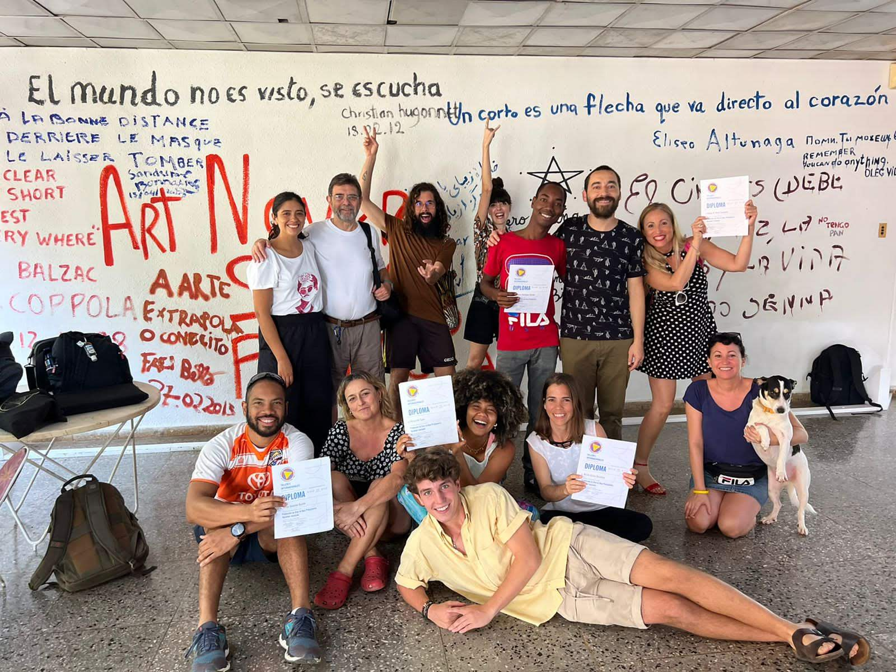
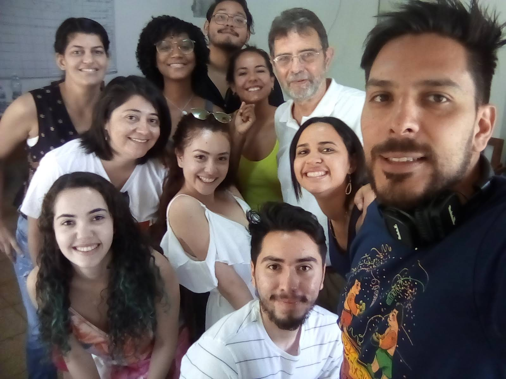
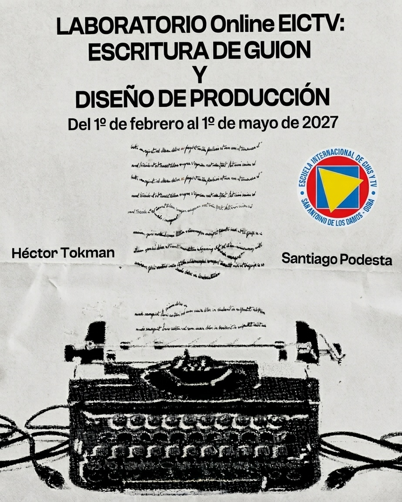
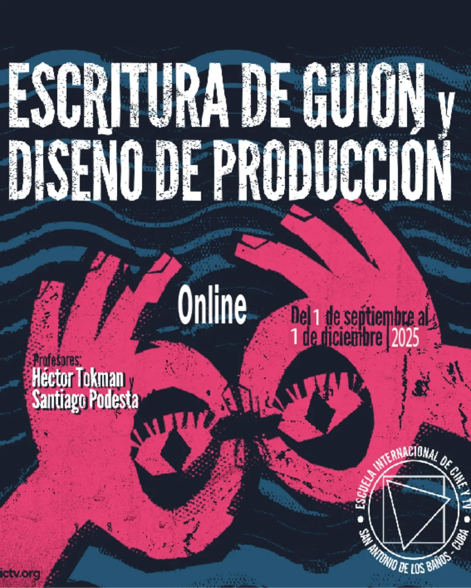

HECTOR TOKMAN
Cineasta • Guionista • Docente Más de treinta años formando realizadores en Argentina, Chile y Cuba. Talleres de producción y escritura de guion para contar tus propias historias.





Sobre mí
Me dicen el profe, el maestro, Bumby o Don Hector.
Fui co-fundador de la Escuela de Cine de Mendoza en el año 1990 (ERCCV) y el primer Director de la Escuela de Cine de la Escuela de Comunicación de la Universidad del Mar en Valparaíso, Chile desde el 2002 hasta el 2012.
Actualmente y desde el año 2012 realizo Talleres Internacionales en la Escuela de Cine de San Antonio de los Baños, Cuba (EICTV) y he dado cursos de realización a los países del Caribe, en los talleres de capacitación de la UNESCO.
Estudié y me recibí en la Carrera de Cine de la Escuela de Bellas Artes de la Universidad Nacional de La Plata (1965/1968).
He trabajado profesionalmente en cámara, fotografía, guion, dirección y producción en varias producciones de mi autoría. Coordiné como docente de realización junto a los estudiantes de Cine, ocho muestras anuales con más de 200 cortometrajes.
Fui productor ejecutivo de tres largometrajes realizados con estudiantes de la Escuela de Cine. "Aguas Milagrosas" y "El Viaje de Emilio" fueron seleccionados y premiados en festivales internacionales.
Hoy me dedico con absoluta pasión a realizar Talleres Presenciales de Producción y Online de Escritura de Guion.
Mis talleres

Escritura de guion y diseño de producción
Del 1 de febrero al 1 de mayo - 2027 - online
.jpg)
Escritura de guion y diseño de producción
Del 7 de septiembre al 30 de noviembre - 2026 - online

Escritura de guion y diseño de producción
Del 1 de septiembre al 1 de diciembre - 2025 - online
Mi trayectoria
Si te interesa saber más sobre mis talleres, trabajos o simplemente quieres ponerte en contacto, puedes escribirme a través de los siguientes canales: